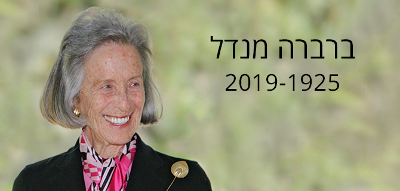

ברברה מנדל, פילנתרופית ומתנדבת, אשתו במשך 70 שנה של
מורטון ל' מנדל (ז"ל), ממייסדי קרן ג'ק, ג'וזף ומורטון מנדל, הלכה לעולמה בשבוע שעבר בגיל 93.
גב' מנדל נולדה בקליבלנד, אוהיו, והתגוררה בפאלם ביץ' שבפלורידה. היא למדה במכללת רדקליף שבאוניברסיטת הרווארד ובמכללת פלורה סטון מאת'ר באוניברסיטת קייס וסטרן, שם הוענק לה התואר הראשון. לגב' מנדל הוענקו גם תוארי כבוד מהאוניברסיטה העברית בירושלים ומאוניברסיטת ברנדייס.
גב' מנדל הייתה פעילה ברחבי ארצות הברית ובמדינת ישראל. היא כיהנה כסגנית יו"ר קרן ג'ק, ג'וזף ומורטון מנדל, כנשיאת סניף קליבלנד במועצה הלאומית של נשים יהודיות, וכיו"ר פיתוח המנהיגות בפדרציה היהודית של קליבלנד. אחר כך נבחרה לנשיאת מועצת הנשים היהודיות בארצות הברית.
את מחויבותה לחינוך הביאה לידי ביטוי בכהונתה כחברת מועצת המנהלים של אוניברסיטת ברנדייס, כחברה בחבר הנאמנים של האוניברסיטה וכסגנית יו"ר בשלל מסעי תרומות חשובים. מחויבותה לאמנויות התבטאה בשנים רבות של שירות במועצת המנהלים של קופר יואיט, המוזיאון הסמיתסוני לעיצוב בניו יורק, ולאחר מכן כיו"ר מועצת המנהלים שלו. מחוץ לארצות הברית היא כיהנה כיו"ר כבוד של האוניברסיטה העברית בירושלים, כמ"מ יו"ר הוועדה המנהלת של האוניברסיטה, וכיו"ר משותף של מסע ההתרמה הבינלאומי למען האוניברסיטה. כן כיהנה כנשיאת אגודת הידידים האמריקנית של האוניברסיטה העברית.
פעילות אזרחית ופילנתרופית הייתה היבט חשוב בחייה של הגב' מנדל. היא סייעה לממן כמה קרנות חשובות העוסקות ברווחה, בכללן הקרן המשפחתית של מורטון וברברה מנדל וקרן הסיוע של מורטון וברברה מנדל. במוקד הפילנתרופיה שלה עמדו תוכניות חינוך למנהיגות, להשכלה גבוהה, לשירותים חברתיים ולאמנויות.
מאמציה של הגב' מנדל בחזית האזרחית זכו להכרה. במרוצת חייה היא זכתה לקבל את הפרס השנתי ע"ש חנה ג' סלומון מטעם המועצה הלאומית של נשים יהודיות, ונבחרה להיכל התהילה של נשות אוהיו. היא גם הייתה חברה לכל חייה בחבר הנאמנים של הפדרציה היהודית בקליבלנד.
"ברברה נותרה מתנדבת פעילה ומכובדת גם בשנות ה-90 לחייה", אמר
פרופ' יהודה ריינהרץ, הנשיא וה-CEO של קרן ג'ק, ג'וזף ומורטון מנדל, ובעבר נשיא אוניברסיטת ברנדייס. "תובנותיה וחוכמתה ממשיכות להעתיר השראה על דור חדש של מתנדבים ומנהיגים. חוכמתה היא רק חלק מהמורשת העשירה שהותירה לנו".
{kind=link}